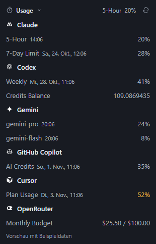
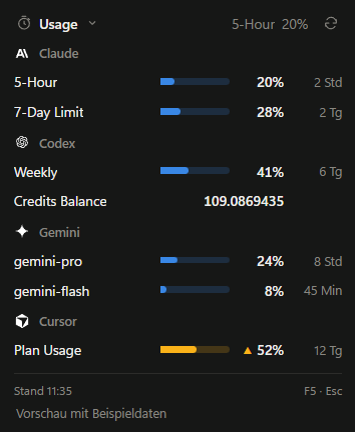
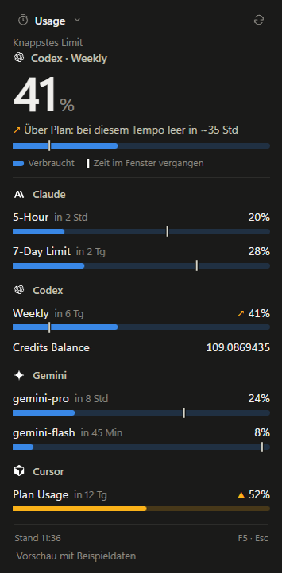
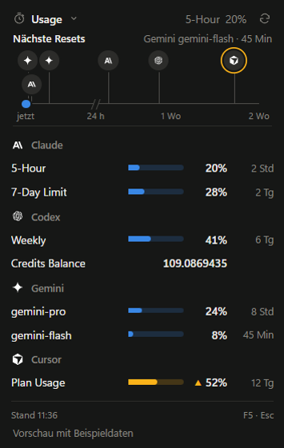
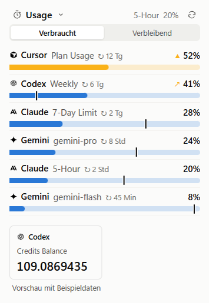

Usage and resets
Hourly and weekly limits, model quotas or budgets. See the values each service provides.
How much is left? Usage Bar shows usage and reset times for your AI services, right next to the Windows clock.
v1.3.0 · Windows 10 / 11 · x64 · MIT license

Click the tray icon to open your overview. Click again to close it.
Hourly and weekly limits, model quotas or budgets. See the values each service provides.
The app refreshes enabled providers automatically. Press F5 or click Refresh to check manually. Provider rate limits still apply.
Enable each provider individually. One is enough. Disabled services are not polled in the background.
Seven views, switchable from the tray menu. Choose a design to preview it.

Compact · The default view · Sample data
The pace marker compares usage with elapsed time. An arrow warns when the limit would be reached before the reset at the current rate.

Upcoming resets on a shared timeline covering two weeks. The first 24 hours get more space.

All limits in one list, with the highest usage first. Values without a percentage follow below.

The optional views can be combined. Pace markers require a time-window length reported by the provider.
Use existing local sign-ins or configure supported tokens in the app.
| Providers | What you see | Sign-in |
|---|---|---|
| Claude | Hourly and weekly limits, resets | Claude Code with profile permission or OpenCode OAuth |
| Codex | Subscription limits, resets and credits | Codex sign-in or OpenCode OAuth |
| Gemini | Model quotas and resets | Gemini CLI Google sign-in or OpenCode OAuth |
| GitHub Copilot | AI credits and reset date | GitHub CLI, local sign-in or a suitable token |
| Cursor | Plan usage, Auto/API usage and available extra quotas | Explicit desktop sign-in import or token |
| OpenRouter | Key budget and usage, otherwise monthly spending | Regular API key or OpenCode sign-in |
Windows 10 or 11, x64. No Node.js, OpenChamber or administrator rights needed for a normal installation.
Download the installer and run Setup. Alternatively, extract the entire portable ZIP and open Usage Bar.exe.
Right-click the tray icon → "Provider einrichten…" (Set up providers). Enable your services and use the appropriate local sign-in or save a token.
Left-click to open the overview. Designs and optional views are in the context menu. If the icon is hidden in the overflow area, drag it next to the clock.
Windows x64 · Installer or portable version
Latest release and changes · SHA-256 checksums for v1.3.0. The installer is currently unsigned.
The app currently uses German interface labels. The website uses English names for the design previews.
Usage Bar is available under the MIT license. The download is free. You need separate accounts and, where applicable, paid plans for the connected services.
The app reads supported local sign-ins. Manually saved tokens are encrypted with Windows DPAPI through Electron safeStorage. Credentials are not passed to the display interface or logged. Usage requests go to the respective providers. See the authentication and data documentation.
The last successfully loaded values stay visible with an error message and timestamp. Switching accounts discards previous values. Manual refresh does not bypass provider rate limits.
Only Windows builds are currently released. The app requires Windows 10 or 11 on an x64 processor.